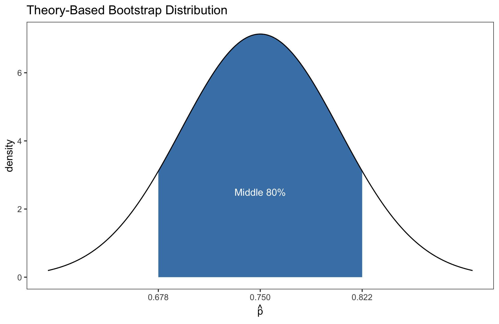
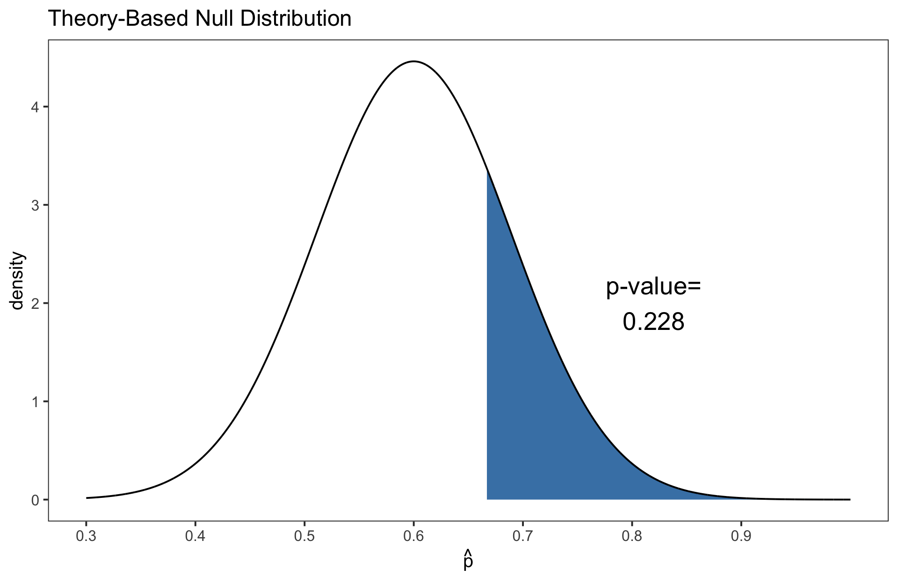
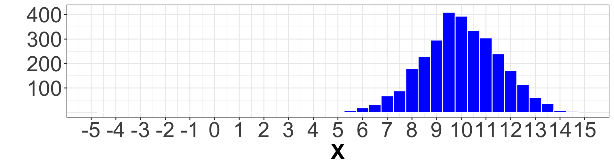
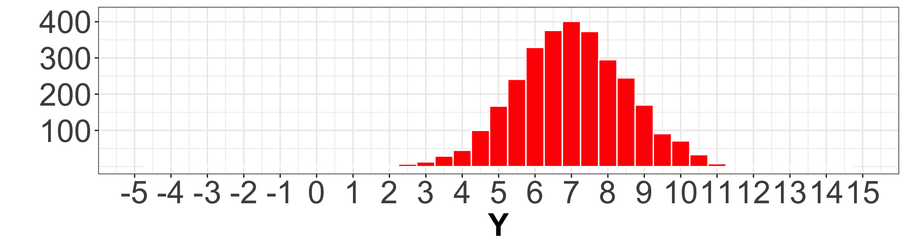
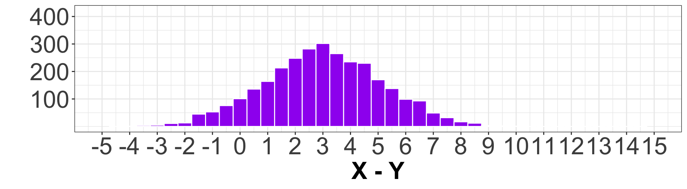
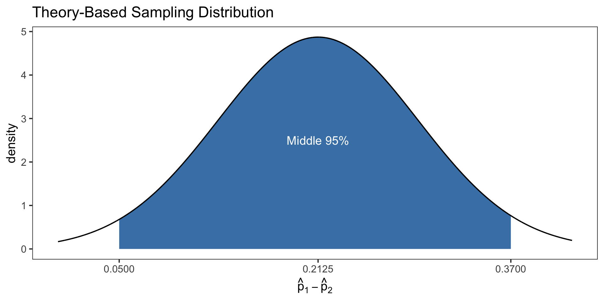
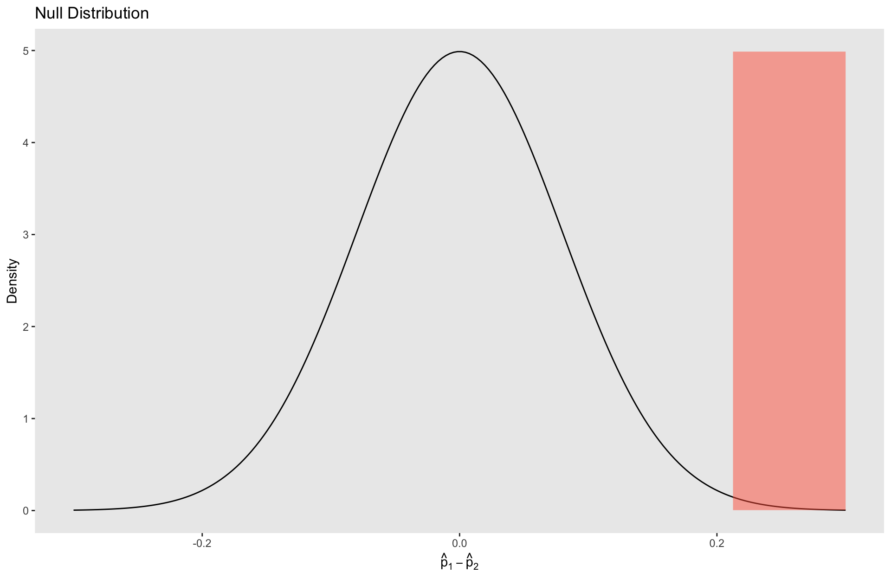

Theory Based Inference II
Megan Ayers
Stat 141 | Fall 2026
Monday, Week 12
Goals for today
Discuss activity from last lecture
Consider inference for a difference in two proportions
Practice on clinical trials data
Recap: Theory-Based Inference for One Proportion
Suppose we want to perform inference on a proportion, \(p\).
- Ex: To understand proportion of Reedies who are vegetarians, we survey \(n\) students.
- Population: All Reedies
- Parameter: \(p\) = Proportion of all Reedies who are vegetarians
- Sample: \(n\) Reedies we surveyed
- Statistic: \(\widehat{p}\) = Proportion of \(n\) sampled Reedies who are vegetarians
- We were able to rewrite \(\widehat{p}\) as a sample mean, so by CLT with “large enough” \(n\), \[\widehat{p} \sim \text{Normal}\Bigg(\ \mu = p, \ \sigma = \sqrt{\frac{p(1-p)}{n}}\ \Bigg)\]
- “Large Enough”: 10 or more “successes”, and 10 or more “failures”
- We use this to (i) construct confidence intervals, and (ii) conduct hypothesis tests
- “Large Enough”: 10 or more “successes”, and 10 or more “failures”
Activity from last lecture
In a SRS of 60 Reedies, 45 have watched the Lord of the Rings trilogy. Create a 80% confidence interval for the true proportion of Reedies who have watched LOTR using theory-based inference.
Carefully go through each step of the inference procedure.
Sketch and write down the assumed sampling distribution of the statistic
Calculate confidence interval (use R)
Interpret your confidence interval in context.
In a SRS of 30 birds in the Reed canyon, 20 are crows. Do we have evidence that more than 60% of birds in the Reed canyon are crows? Conduct a hypothesis test using theory-based inference.
Carefully go through each step of the inference procedure.
Sketch and write down the null distribution
Calculate p-value (use R)
Use your p-value to make a conclusion with \(\alpha=0.10\)
Answers (Confidence Intervals)
In a SRS of 60 Reedies, 45 have watched the Lord of the Rings trilogy. Create a 80% confidence interval for the true proportion of Reedies who have watched LOTR using theory-based inference.
- Collect Data: In a sample of 60 students, 45 watched LOTR
- Point Estimate: We estimate \(\widehat{p} = 45/60 = 0.75\)
- Get Sampling Distribution:
\[\text{Normal}(0.75,\ \sqrt{0.75(1-0.75)/60})\]
Answers (Hypothesis Testing)
In a SRS of 30 birds in the Reed canyon, 20 are crows. Do we have evidence that more than 60% of birds in the Reed canyon are crows? Conduct a hypothesis test using theory-based inference.
State Hypotheses: \(H_0: p=0.6\); \(H_a: p>0.6\)
Null Distribution:
\[\text{Normal}(0.6,\sqrt{0.6(1-0.6)/30})\]

Difference In Proportions
Difference in Proportions
Today, we’ll perform inference on a difference in proportions, \(p_1 - p_2\)
- “Differences in proportions” come up all the time in the real world:
- e.g., Compare the effectiveness of two drugs
- e.g., Study if Portlanders support drug decriminalization more or less than Seattleites
- To answer these questions, we use similar inference procedures, but need to…
- Collect two samples: 1 for each group
- Derive a new sampling distribution using the CLT
Difference in Proportions: Population(s), Parameter, Sample(s), Statistic
Population(s): Population 1, and Population 2
Parameter: The parameter is: \(p_1 - p_2\) = Difference in population proportions, where
- \(p_1\)=Proportion in Population 1
- \(p_2\)=Proportion in Population 2
Sample(s):
- Sample 1: \(n_1\) individuals from Population 1
- Sample 2: \(n_2\) individuals from Population 2
Statistic: The statistic is: \(\widehat{p}_1 - \widehat{p}_2\) = Difference in sample proportions, where
- \(\widehat{p}_1\) = Proportion in Sample 1
- \(\widehat{p}_2\) = Proportion in Sample 2
Example: Comparing Drug A to Drug B
- Ex: Is Drug A more effective at curing heart disease than Drug B?
- We conduct an SRS of \(n\) adults who have heart disease
- We randomly assign these adults to either take Drug A, or Drug B
- Drug A group has \(n_1\) patients
- We compare proportions of adults who were cured with Drug A versus Drug B
- Discuss with Neighbor(s): In this setting, what are the:
- Population(s)
- Parameter
- Sample(s)
- Statistic
Example: Comparing Drug A to Drug B
- Population(s): Overall, sampling from adults who have heart disease
- Population 1: More specifically, adults with heart disease when they receive drug A
- Population 2: More specifically, adults with heart disease when they receive drug B
- Parameter: The parameter is: \(p_1 - p_2\) = Difference in recovery rates for all adults with heart disease, where
- \(p_1\)=Proportion who would recover with Drug A
- \(p_2\)=Proportion who would recover with Drug B
- Sample(s): Of the \(n\) total that we sampled,
- Sample 1: \(n_1\) people we gave Drug A
- Sample 2: \(n - n_1\) people we gave Drug B
- Statistic: the statistic is: \(\widehat{p}_1 - \widehat{p}_2\) = Difference in recovery rates between our samples, where
- \(\widehat{p}_1\)=Proportion who recovered in the Drug A group (Sample 1)
- \(\widehat{p}_2\)=Proportion who recovered in the Drug B group (Sample 2)
Sampling Distribution of \(\widehat{p}_1 - \widehat{p}_2\)
We know the (large-sample) sampling distributions of \(\widehat{p}_1\) and \(\widehat{p}_2\) individually: \[ \begin{align*} \widehat{p}_1 &\sim \text{Normal} \biggr( p_1, \sqrt{\frac{p_1(1-p_1)}{n_1}} \biggr) \\ \widehat{p}_2 &\sim \text{Normal} \biggr( p_2, \sqrt{\frac{p_2(1-p_2)}{n_2}} \biggr) \end{align*} \]
But what is the sampling distribution of \(\widehat{p}_1 - \widehat{p}_2\)?
Notice: Our statistic (\(\widehat{p}_1 - \widehat{p}_2\)) is the difference between two normally distributed statistics
- What happens when you subtract two normal distributions (i.e., bell-curves)?
Subtracting Bell Curves



Inspect the distributions of:
\(X\) (in blue)
\(Y\) (in red)
\(X - Y\) (in purple)
Discuss with Neighbor(s):
What are the means of \(X\) and \(Y\)?
What is the mean of \(X - Y\)?
How do the spreads of the distributions compare?
Subtracting Bell Curves


Q: What are the means of \(X\) and \(Y\)?
- 10 for \(X\)
- 7 for \(Y\)
Q: What is the mean of \(X - Y\)?
- \(10 - 7 = \boxed{3}\)
- i.e., “Mean of \(X\)” - “Mean of \(Y\)”
Q: How do the spreads of the distributions compare?
- \(X\) and \(Y\) are about the same
- \(X-Y\) has higher spread/variance
Subtracting (Independent) Normal Distributions
Differences of Normal Distributions: Given two independent normal distributions
\[ \begin{align*} X \sim \text{Normal}(\mu_X, \sigma_X) \qquad \text{and} \qquad Y \sim \text{Normal}(\mu_Y, \sigma_Y) \end{align*} \]
Then,
\[ \begin{align*} \color{red}{\boxed{X - Y \sim \text{Normal} \left( \mu_X - \mu_Y, \sqrt{\sigma_X^2 + \sigma_Y^2} \right) }} \end{align*} \]
Mean: Difference in the means of the two distributions
SD: A “combination” of the SDs of the two distributions (that is larger)
Sampling Distribution of \(\widehat{p}_1 - \widehat{p}_2\)
So if:
\[ \begin{align*} \widehat{p}_1 &\sim \text{Normal} \biggr( \mu = \color{red}{p_1}, \sigma = \color{red}{\sqrt{\frac{p_1(1-p_1)}{n_1}}} \biggr) \\ \widehat{p}_2 &\sim \text{Normal} \biggr( \mu = \color{red}{p_2}, \sigma = \color{red}{\sqrt{\frac{p_2(1-p_2)}{n_2}}} \biggr) \end{align*} \]
Since \(\widehat{p}_1\) and \(\widehat{p}_2\) are independent,
\[\boxed{\widehat{p}_1 - \widehat{p}_2 \sim \text{Normal}\Bigg(\ \mu = \color{red}{p_1-p_2}, \ \sigma = \color{red}{\sqrt{\frac{p_1(1-p_1)}{n_1}+ \frac{p_2(1-p_2)}{n_2}} }\ \Bigg)}\]
Theoretical Sampling Distribution of a Difference in Proportions
Theorem: Normality of difference in proportions
The difference in proportions \(\widehat{p}_1 - \widehat{p}_2\) is approximately Normal when:
- Each sample has at least 10 “successes” and at least 10 “failures”
- The two samples are independent of each other
Then in this case, \[\widehat{p}_1 - \widehat{p}_2 \approx \text{Normal}\Bigg(\mu = p_1-p_2, \sigma = \sqrt{\frac{p_1(1-p_1)}{n_1}+\frac{p_2(1-p_2)}{n_2}}\Bigg)\]
Note: Need \(\geq 10\) successes and failures in both samples
Note: We have to check something new: that the samples are independent
Confidence Intervals and Hypothesis Tests
Confidence Intervals: Drug Comparison
Ex: What is the difference in recovery rates for Drug A and Drug B?
- Let’s find a 95% confidence interval for \(p_1 - p_2\)
Collect Data:
Drug A Group: \(n_1=50\); 20 patients are cured
Drug B Group: \(n_2=80\); 15 patients are cured
Statistic:
\(\widehat{p}_1 = 20/50 = 0.40\) and \(\widehat{p}_2 = 15/80 = 0.1875\)
\(\boxed{\widehat{p}_1-\widehat{p}_2 = 0.2125}\)
Sampling Distribution:
- Theory-based sampling distribution of \(\widehat{p}_1-\widehat{p}_2\):
\[\text{Normal}\Bigg(p_1-p_2,\sqrt{\frac{p_1(1-p_1)}{n_1}+ \frac{p_2(1-p_2)}{n_2}} \Bigg)\]
Q: We don’t know true \(p_1, p_2\)… how do we get rid of them?
Confidence Intervals: Drug Comparison
Ex: What is the difference in recovery rates for Drug A and Drug B?
- Let’s find a 95% confidence interval for \(p_1 - p_2\)
Collect Data:
Drug A Group: \(n_1=50\); 20 patients are cured
Drug B Group: \(n_2=80\); 15 patients are cured
Statistic:
\(\widehat{p}_1 = 20/50 = 0.40\) and \(\widehat{p}_2 = 15/80 = 0.1875\)
\(\boxed{\widehat{p}_1-\widehat{p}_2 = 0.2125}\)
Sampling Distribution:
Q: We don’t know true \(p_1, p_2\)… how do we get rid of them?
- Plug-in \(\widehat{p}_1, \ \widehat{p}_2\) for \(p_1, p_2\)!
\[\textbf{Normal} \left( \color{red}{\widehat{p}_1}-\color{red}{\widehat{p}_2},\sqrt{\frac{\color{red}{\widehat{p}_1}(1-\color{red}{\widehat{p}_1})}{n_1}+ \frac{\color{red}{\widehat{p}_2}(1-\color{red}{\widehat{p}_2})}{n_2}} \right)\]

Confidence Intervals: Drug Comparison
We want a 95% confidence interval for \(p_1 - p_2\)
\[\text{Normal}\Bigg(p_1-p_2,\sqrt{\frac{p_1(1-p_1)}{n_1}+ \frac{p_2(1-p_2)}{n_2}} \Bigg)\]

Get confidence interval: Middle 95% is \((0.05, \ 0.37)\) (can use qnorm() like usual)
- “We are 95% confident that Drug A is between 5% and 37% more effective than Drug B.”
Hypothesis Testing: Drug Comparison
Ex: Is Drug A more effective than Drug B?
Q: How should we define \(H_0\) and \(H_a\) so that they get at this research question?
- Reminder: Our parameter here is \(p_1 - p_2\)
\[ \begin{align*} H_0: p_1 = p_2 &\implies p_1 - p_2 = 0\\ H_a: p_1 > p_2 &\implies p_1 - p_2 > 0 \end{align*} \]
Hypothesis Testing: Drug Comparison
Ex: Is Drug A more effective than Drug B?
Hypotheses:
\[ \begin{align*} H_0: p_1 = p_2 &\implies p_1 - p_2 = 0\\ H_a: p_1 > p_2 &\implies p_1 - p_2 > 0 \end{align*} \]
Null Distribution: By the CLT, \[\widehat{p}_1 - \widehat{p}_2 \approx \text{Normal}\Bigg(\mu = p_1-p_2, \sigma = \sqrt{\frac{p_1(1-p_1)}{n_1}+\frac{p_2(1-p_2)}{n_2}}\Bigg)\]
- Q: How we use \(H_0\) to get rid of unknown \(p_1\) and \(p_2\)?
- If \(H_0\) is true, then \(p_1 - p_2 = 0\)
- Under \(H_0\), there is no expected difference between groups: Thus, we can plug in a pooled proportion, \[\text{Pooled Proportion} = \color{red}{\widehat{p}_{\text{pool}} = \frac{\#\text{Successes}_1 + \#\text{Successes}_2}{n_1 + n_2}}\] for \(p_1\) and \(p_2\).
Hypothesis Testing: Drug Comparison
Ex: Is Drug A more effective than Drug B?
Hypotheses: \(H_0: p_1-p_2=0\) vs. \(H_a: p_1 - p_2 >0\)
Null Distribution:
\(\widehat{p}_1 - \widehat{p}_2 \approx \text{Normal}\Bigg(\mu = \color{red}{0}, \sigma = \sqrt{\frac{\color{red}{\widehat{p}_{\text{pool}}}(1-\color{red}{\widehat{p}_{\text{pool}}})}{n_1}+\frac{\color{red}{\widehat{p}_{\text{pool}}}(1-\color{red}{\widehat{p}_{\text{pool}}})}{n_2}}\Bigg)\)
Data:
Drug A Group: \(n_1=50\); 20 patients are cured
Drug B Group: \(n_2=80\); 15 patients are cured
Test Statistic: \(\widehat{p}_1-\widehat{p}_2 = \frac{20}{50}-\frac{15}{80} = 0.2125\)
Pooled Proportion: \(\widehat{p}_{\text{pool}} = \frac{20+15}{50+80} = 0.27\)
Hypothesis Testing: Drug Comparison
Calculate and Interpret P-Value:

\(\text{Normal}\Bigg(\mu = \color{red}{0}, \sigma = \sqrt{\frac{\color{red}{\widehat{p}_{\text{pool}}}(1-\color{red}{\widehat{p}_{\text{pool}}})}{n_1}+\frac{\color{red}{\widehat{p}_{\text{pool}}}(1-\color{red}{\widehat{p}_{\text{pool}}})}{n_2}}\Bigg)\)
Test Statistic: \(\widehat{p}_1-\widehat{p}_2 = 0.2125\)
P-value = 0.003 (we can still find this using
pnorm())With a rejection level of \(\alpha = 0.01\), we would reject \(H_0\).
We claim Drug A is more effective than Drug B.
Recap
Theorem: Normality of difference in proportions
The difference in proportions \(\widehat{p}_1 - \widehat{p}_2\) is approximately Normal when:
- Each sample has at least 10 “successes” and at least 10 “failures”
- The two samples are independent of each other
Then in this case, \[\widehat{p}_1 - \widehat{p}_2 \approx \text{Normal}\Bigg(\mu = p_1-p_2, \sigma = \sqrt{\frac{p_1(1-p_1)}{n_1}+\frac{p_2(1-p_2)}{n_2}}\Bigg)\]
\[\textbf{Confidence Intervals}\]
\[\\\\\\\\\\\\\\\\\\\\\\\\\\\\\\\\\\\\\]
\[\text{Sampling Distribution}\] \[(\textbf{Plug in }\color{red}{\widehat{p}_1}\text{ and }\color{red}{\widehat{p}_2})\]
\[\textbf{Normal}\Bigg(\color{red}{\widehat{p}_1}-\color{red}{\widehat{p}_2}, \sqrt{\frac{\color{red}{\widehat{p}_1}(1-\color{red}{\widehat{p}_1})}{n_1}+\frac{\color{red}{\widehat{p}_2}(1-\color{red}{\widehat{p}_2})}{n_2}}\Bigg)\]
\[\textbf{Hypothesis Testing}\] \[(H_0: p_1 - p_2 = d_0)\] \[\text{Null Distribution}\] \[(\textbf{Plug-in null value, }\color{red}{d_0}\text{, and }\color{red}{\widehat{p}_{\mathrm{pool}}})\]
\[ \hspace{-0.30in} \text{Normal}\Bigg( \color{red}{d_0}, \sqrt{\frac{\color{red}{\widehat{p}_{\mathrm{pool}}}(1-\color{red}{\widehat{p}_{\mathrm{pool}}})}{n_1}+\frac{\color{red}{\widehat{p}_{\mathrm{pool}}}(1-\color{red}{\widehat{p}_{\mathrm{pool}}})}{n_2}}\Bigg)\]
Next time
- Theory-based inference with means